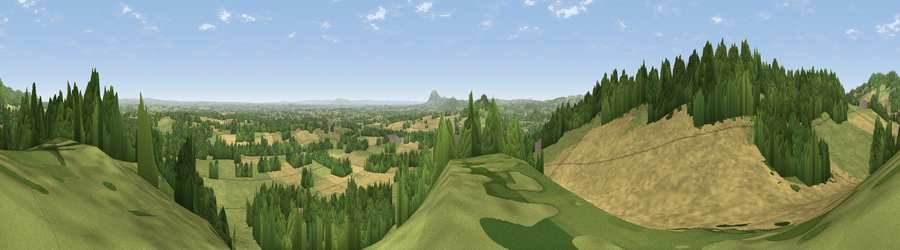

Viewpoint near Martley
#5691 in England · top 12% of its area beats it · near MartleyThe view, rendered

A 360° render of this exact spot computed from the terrain model, tree cover and land cover — summer colours, afternoon light, calibrated against photographs of famous viewpoints. Real trees, hedges and buildings will differ in detail.
The panorama
Grey silhouette: terrain skyline in each direction (720 bearings, Earth curvature and refraction included). Dashed green: skyline with trees (+15 m) and buildings (+8 m) as obstacles. Blue strip: how far the ground is visible on each bearing.
Where the view opens
Wedge length = distance to the farthest visible ground on that bearing (vegetation-aware). Rings at 10, 25 and 50 km.
What fills the view
35% cropland · 34% grassland · 30% woodland · 2% built-up
Angular shares of the visible panorama (visual magnitude), not map area. Landscape diversity 0.50 (0–1 Shannon).
Key numbers
More beautiful places nearby
The staircase of upgrades: each row has a higher view potential than everything closer. Driving times are estimates from straight-line distance, calibrated against real road routing — check an actual route before setting out.
| Place | Direction | Drive | Score |
|---|---|---|---|
| Viewpoint near Martley | WNW · 0 km | ~1 min | 77.0 |
| Viewpoint near Great Witley | N · 3 km | ~7 min | 83.4 |
| North Hill | S · 15 km | ~27 min | 86.8 |
| Worcestershire Beacon | S · 16 km | ~29 min | 87.1 |
| Viewpoint near West Quantoxhead | SSW · 135 km | ~158 min | 87.9 |
| Viewpoint near West Quantoxhead | SSW · 135 km | ~159 min | 88.7 |
| Holdstone Hill | SW · 160 km | ~182 min | 90.2 |
| The Knoll | S · 175 km | ~196 min | 91.0 |
52.25167, -2.36507 · source: screening · position refined by local search. Computed location — check access rights before visiting.